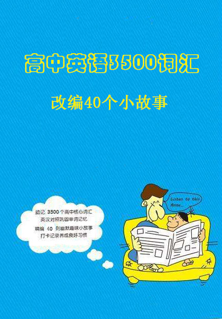

高中英语3500词汇故事 (Senior high school English 3500 words)
作者：未知 (unknow) [中国]
把高中英语3500个单词巧妙地编成40篇小故事，将单词放在文段中去理解，联系上下文，加以一定的推测。而且文章是连贯的、具象的，更加能够加深印象，提升记单词的效率。
难度：
高中
长度：
短篇
分类：
社会
第一篇: 爱上英语 Fall in Love with English
第二篇: 不同的国家有不同的英语 Different Countries Have Different Kinds of Englishes
第三篇: 一次辛苦的旅行 A Hard Trip
第四篇: 可怕的地震 A Horrible Earthquake
第五篇: 伟大的总统 The Great President
第六篇: 勇敢的女仆 A Brave Maid
第七篇: 公平的比赛 A Fair Competition
第八篇: 电脑 Computers
第九章: 保护野生动植物 Wildlife Protection
第十篇: 我的第一支乐队 My First Band
第十一篇: 有趣的节日 An Interesting Festival
第十二篇: 平衡膳食 Balanced Diet
第十三篇: 划船回家 Sailing Home
第十四篇: 探测MKII行星 Explore MKII
第十五篇: 横穿加拿大的旅行 A Journey across Canada
第十六篇: 女医生丽娜 A Woman Doctor Lina
第十七篇: 新的耕种方式 A New Farming Way
第十八篇: 卓别林——幽默大师 Chaplin -- A Great Master of Humour
第十九篇: 一场误会 A Misunderstanding
第二十篇: 独一无二的主题公园 A Unique Theme Park
第二十一篇: 奇怪的疾病 A Strange Disease
第二十二篇: 观光联合王国 Sightseeing in the United Kingdom
第二十三篇: 飞机失事 An Air Crash
第二十四篇: 业余记者 An Amateur Journalist
第二十五篇: 急救 First Aid
第二十六篇: 抽象艺术 Abstract Art
第二十七篇: 俄国童谣 A Russian Poem
第二十八篇: 帮助青少年 Let’s Help Adolescents
第二十九篇: 恢复环境生机 Refresh Our Environment
第三十篇: 火山爆发 A Volcano Eruption
第三十一篇: 战胜残疾 Defeat Disability
第三十二篇: 幸福的婚姻需要争取 Happy Marriage Needs Fighting For
第三十三篇: 马克和海豹 Mark and a Seal
第三十四篇: 援助山村 Helping the Remote Village
第三十五篇: 留学美国 Study in America
第三十六篇: 移民美国 Immigrate to America
第三十七篇: 谨慎对待克隆 Be Careful about Cloning
第三十八篇: 奇怪的专利申请 Strange Patent Applications
第三十九篇: 口音与身份 Pronunciation and Status
第四十篇: 一宗狡猾的谋杀案 A Sly Murder